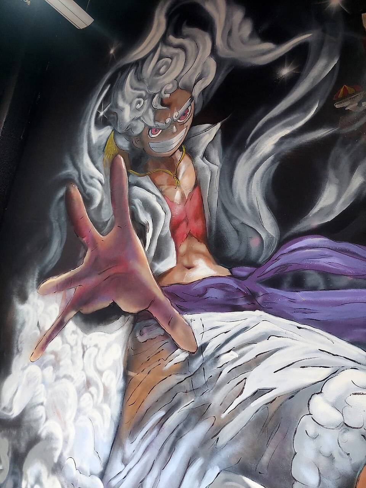

This site is about my expierience watching and reading One Piece.
As of today, one piece is 1172 episodes long, and 1190 manga chapters long. While this seems like alot, it's well worth it, and I am completly caught up on both the anime and manga. You will laugh, cry, and feel goosbumps many times while watching.
The main character, Monkey D Luffy, is a static character, and doesnt change much throughout the story. Yet he is one of my favorite characters ever.
| Title | Animation | Fights | Story | Emotion | Overall |
|---|---|---|---|---|---|
| Alabasta | 6.5/10 | 8/10 | 9/10 | 9/10 | 8/10 |
| Water 7 | 8/10 | 10/10 | 9/10 | 10/10 | 9.5/10 |
| Marineford | 8/10 | 9/10 | 10/10 | 10/10 | 9.5/10 |
| Dressrosa | 9/10 | 9/10 | 8/10 | 7/10 | 8.5/10 |
| Whole Cake Island | 10/10 | 10/10 | 10/10 | 10/10 | 10/10 |
| Wano Country | 10/10 | 10/10 | 10/10 | 10/10 | 10/10 |
| Egghead Island | 10/10 | 10/10 | 8/10 | 10/10 | 9/10 |